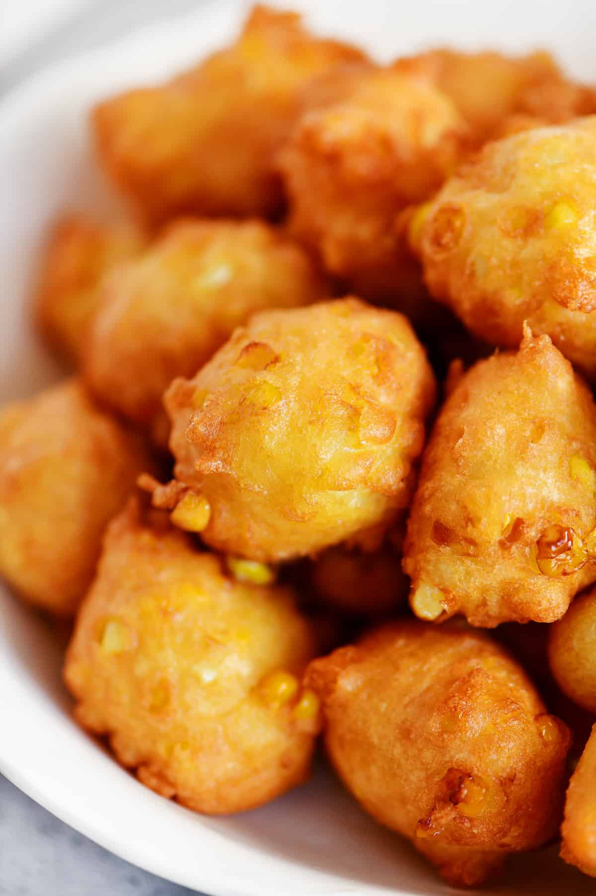

Corn Fritters

Corn Fritters
Corn fritters are another staple in the south. They are just the right amount of both sweet and salty. They go great with just about any meal
and can be served with maple syrup. Quite the crowd pleaser.
Ingredients
- 1 can of sweet corn
- 1 cup of flour
- 1/2 cup of sugar
- 1 Tbsp of baking powder
- 3 Cups of peanut or other frying oil
Steps
- Heat oil in a large pot suitable for frying
- Mix flour, sugar and baking powder in a large bowl
- Add corn into the bowl and mix
- Drop ~1/4 cup sized clumps into the oil and fry until golden brown
- Enjoy!